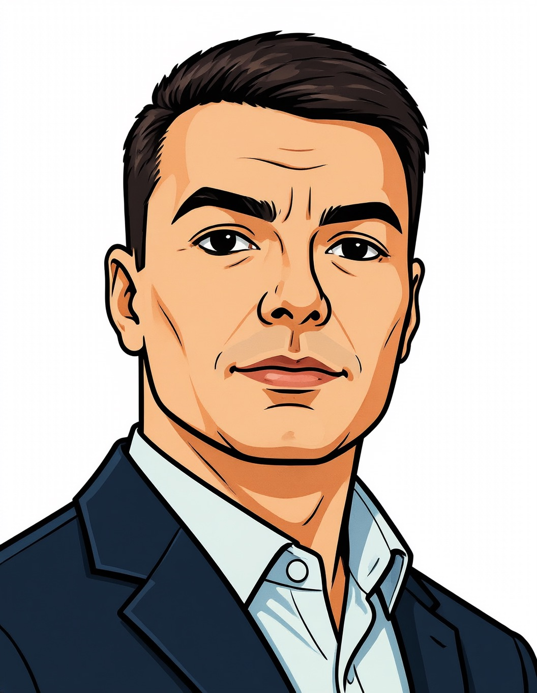

IT-инженер с 20-летним опытом: от низкоуровневой разработки (C/C++, Rust, ESP32) и системного администрирования (Linux, KVM, Postfix) до локальных AI-решений (Ollama, RAG).
Автор патента на фреймворк автоматизации PiTools (св-во №2026610793).
Сайт: peginelab.ru
GitHub: github.com/musikfed
Связь: Telegram @Feudorlab1 · Email feudor.lab@yandex.ru
IT engineer with 20 years of experience: from low-level development (C/C++, Rust, ESP32) and system administration (Linux, KVM, Postfix) to local AI solutions (Ollama, RAG).
Author of the PiTools automation framework patent (No. 2026610793).
Website: peginelab.ru
GitHub: github.com/musikfed
Contact: Telegram @Feudorlab1 · Email feudor.lab@yandex.ru
拥有20年经验的IT工程师：从底层开发（C/C++、Rust、ESP32）和系统管理（Linux、KVM、Postfix）到本地AI解决方案（Ollama、RAG）。
自动化框架 PiTools 专利的作者。
网站: peginelab.ru
GitHub: github.com/musikfed
联系方式: Telegram @Feudorlab1 · Email feudor.lab@yandex.ru
IT-Ingenieur mit 20 Jahren Erfahrung: von der Low-Level-Entwicklung (C/C++, Rust, ESP32) und Systemadministration (Linux, KVM, Postfix) bis hin zu lokalen KI-Lösungen (Ollama, RAG).
Autor des Patents für das Automatisierungsframework PiTools.
Webseite: peginelab.ru
GitHub: github.com/musikfed
Kontakt: Telegram @Feudorlab1 · Email feudor.lab@yandex.ru
20 साल के अनुभव के साथ आईटी इंजीनियर: निम्न-स्तरीय विकास (C/C++, Rust, ESP32) और सिस्टम प्रशासन (Linux, KVM, Postfix) से लेकर स्थानीय AI समाधान (Ollama, RAG) तक।
स्वचालन ढांचे PiTools के पेटेंट के लेखक।
वेबसाइट: peginelab.ru
GitHub: github.com/musikfed
संपर्क: Telegram @Feudorlab1 · Email feudor.lab@yandex.ru
Ingénieur IT avec 20 ans d'expérience : du développement bas niveau (C/C++, Rust, ESP32) et de l'administration système (Linux, KVM, Postfix) aux solutions d'IA locales (Ollama, RAG).
Auteur du brevet du framework d'automatisation PiTools.
Site web : peginelab.ru
GitHub : github.com/musikfed
Contact : Telegram @Feudorlab1 · Email feudor.lab@yandex.ru
IT-insinööri, jolla on 20 vuoden kokemus: matalan tason kehityksestä (C/C++, Rust, ESP32) ja järjestelmänvalvonnasta (Linux, KVM, Postfix) paikallisiin tekoälyratkaisuihin (Ollama, RAG).
Automaatiokehyksen PiTools patentin haltija.
Verkkosivusto: peginelab.ru
GitHub: github.com/musikfed
Yhteystiedot: Telegram @Feudorlab1 · Email feudor.lab@yandex.ru
20년 경력의 IT 엔지니어: 저수준 개발(C/C++, Rust, ESP32) 및 시스템 관리(Linux, KVM, Postfix)부터 로컬 AI 솔루션(Ollama, RAG)까지.
자동화 프레임워크 PiTools 특허 보유자.
웹사이트: peginelab.ru
GitHub: github.com/musikfed
연락처: Telegram @Feudorlab1 · Email feudor.lab@yandex.ru
20年の経験を持つITエンジニア：低レベル開発（C/C++、Rust、ESP32）やシステム管理（Linux、KVM、Postfix）から、ローカルAIソリューション（Ollama、RAG）まで。
自動化フレームワーク PiTools の特許保有者。
ウェブサイト: peginelab.ru
GitHub: github.com/musikfed
連絡先: Telegram @Feudorlab1 · Email feudor.lab@yandex.ru
Ingegnere IT con 20 anni di esperienza: dallo sviluppo a basso livello (C/C++, Rust, ESP32) e amministrazione di sistema (Linux, KVM, Postfix) alle soluzioni AI locali (Ollama, RAG).
Autore del brevetto del framework di automazione PiTools.
Sito web: peginelab.ru
GitHub: github.com/musikfed
Contatto: Telegram @Feudorlab1 · Email feudor.lab@yandex.ru
IT-інжынер з 20-гадовым вопытам: ад нізкаўзроўневай распрацоўкі (C/C++, Rust, ESP32) і сістэмнага адміністравання (Linux, KVM, Postfix) да лакальных AI-рашэнняў (Ollama, RAG).
Аўтар патэнта на фрэймворк аўтаматызацыі PiTools (пасведчанне №2026610793).
Сайт: peginelab.ru
GitHub: github.com/musikfed
Сувязь: Telegram @Feudorlab1 · Email feudor.lab@yandex.ru